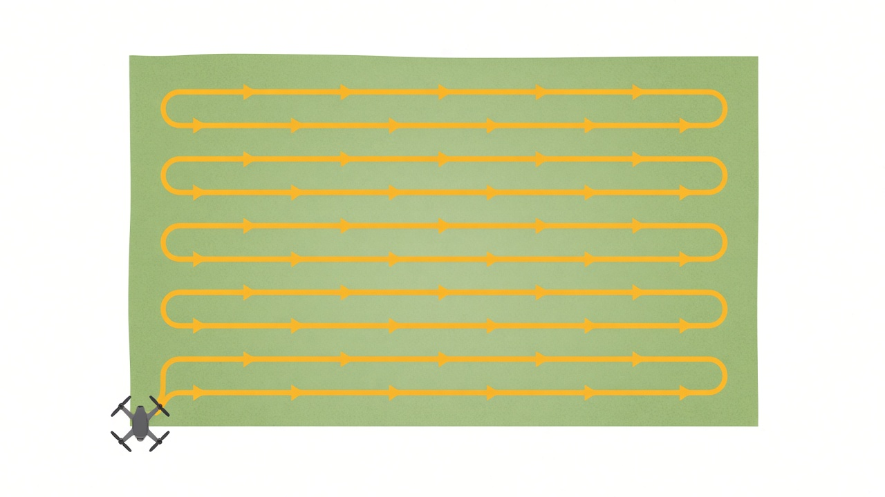
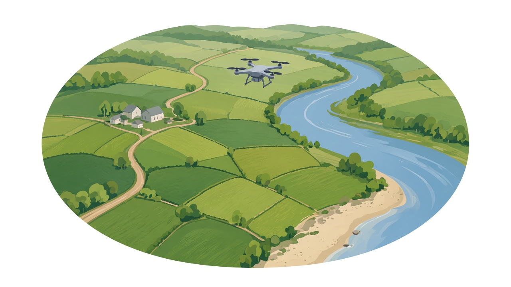
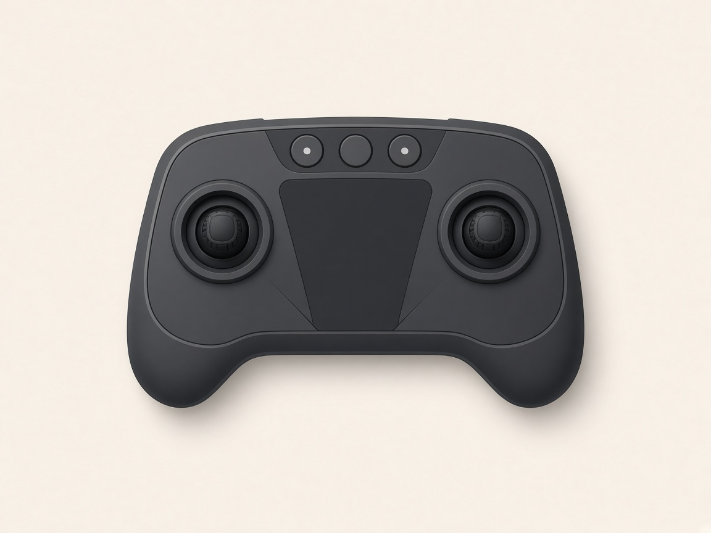
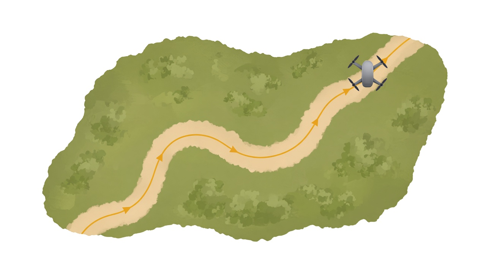
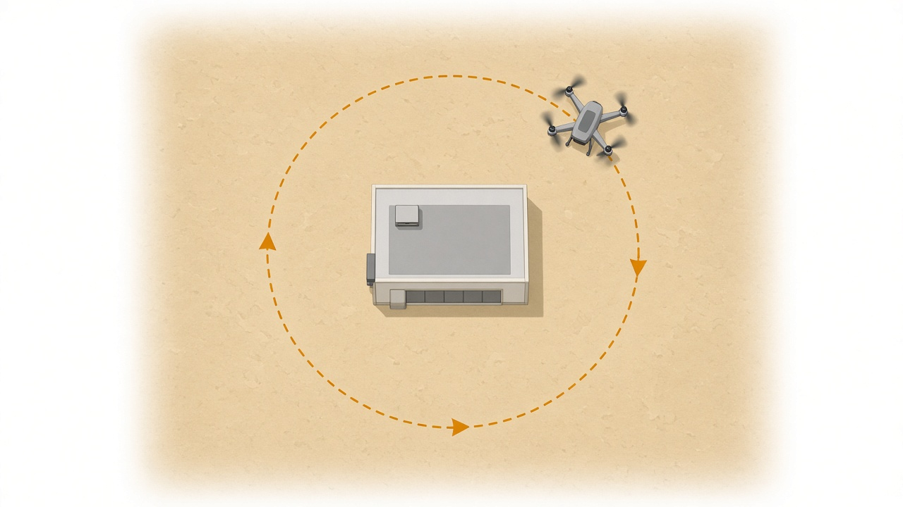
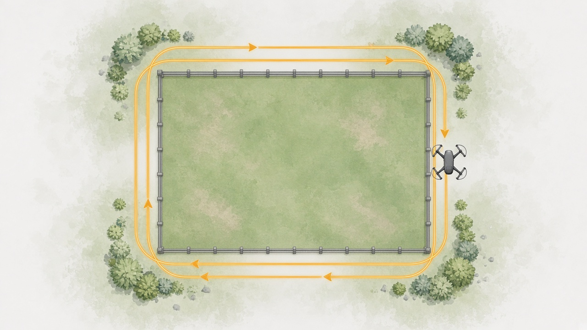
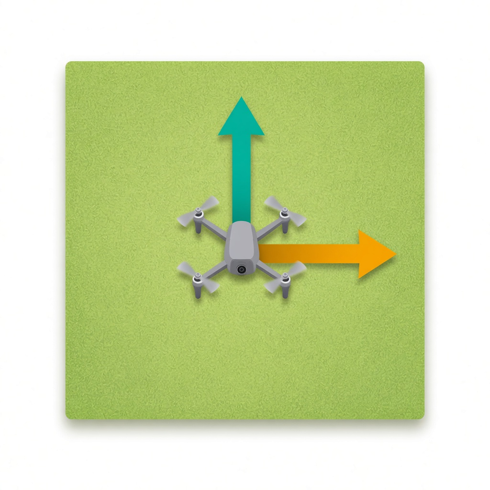

1 · Площадная
Район галсами
Четыре угла района. Программа сама строит параллельные проходы и закрывает площадь один раз.
Готовый комплект для показа DJI Mavic 2 Pro: десять площадок, ручной полёт с пульта TX12 и четыре режима разведки, которые дрон выполняет сам.

Дважды щёлкните Запуск.bat. Сначала карта, затем кто управляет. Симуляция стартует сама, отдельно нажимать воспроизведение не нужно.
Цифра от 1 до 9 или 0 для острова. Взлёт всегда из центра.
1 — пульт TX12. В окне робота показаны кнопки и стики.
2 — патруль. Дрон стоит на площадке, пока в окне робота не нажата кнопка «Старт».
Режим и числа задаются в окне робота. Зону ставят кликом по карте: север сверху, восток справа, ноль — площадка. Те же метры можно ввести в строке точки. Если окна не видно, щёлкните дрон правой кнопкой и выберите Show Robot Window.
Нужен установленный Webots R2025a. Папку не разбирайте: рядом с запуском остаются каталоги worlds, controllers и plugins. При первом открытии карты Webots может скачать модели и текстуры, если их ещё нет в кэше.
Каждая площадка 500 на 500 метров. В центре ровный квадрат около 90 метров: отсюда взлетают и сюда возвращаются. Вода только рисуется, садиться можно на твёрдый грунт.
Открытое поле и сетка 50 м. Удобно проверить взлёт, висение и посадку.
Склоны и стволы деревьев. Кроны не мешают пролёту, стволы занимают место.
Кварталы, улицы и фасады. Стены и крыши — препятствия.
Вода с юга, променад, пирс и дома к северу от берега.
Русло и мост примерно в 8 м над водой. Под ним можно пролететь.
Низкие дома, дворы и более узкие дороги.
Склады, штабели контейнеров и вода вдоль восточного края.
Два хребта и долина к востоку от площадки. Дальше можно набрать высоту.
Клетки посевов и живые изгороди высотой около 2,5 м.
Берег, вода вокруг, пирс и холм. Площадка остаётся на суше.

Режим «1» отдаёт дрон стикам. Пульт должен быть в режиме USB Joystick и подключён до старта. Окно робота в этом режиме показывает те же кнопки.
Соответствие стиков записано в controllers\mavic_manual\mavic_manual.cfg. Меняются номера осей, программу заново собирать не нужно. Без пульта контроллер сообщит, что джойстик не найден, и не даст включить моторы. Это ожидаемо.

Четыре угла района. Программа сама строит параллельные проходы и закрывает площадь один раз.

Ломаная, ширина полосы и шаг. Проходы идут ровно через этот шаг. Второй появляется, когда ширина не меньше двух шагов.
Сейчас в площадном задании квадрат 40×40 м с шагом 5 м: получается 16 точек. В маршрутном — три точки ломаной и одна полоса шириной 8 м. Высота обоих заданий — 1 м.

Центр, радиус и число кругов задаются на панели. Радиус — любое число, которое помещается на карте.

Замкнутая линия и число обходов. Внутрь контура дрон не заходит: он стережёт границу.
В файле объекта сейчас центр в 12 м к востоку, радиус 20 м и один круг. Дозор: прямоугольник 24×16 м, два обхода. После «Старт» дрон взлетает, проходит задание, возвращается в точку старта и садится.

Ноль — центр площадки, где стоит дрон. Оранжевая стрелка — восток, ось X. Бирюзовая — север, ось Y.
Задание не поворачивается вместе с носом. На панели его ставят кликом по карте, числа востока и севера правят ту же точку. Точки остаются внутри площадки 500×500 м, то есть в пределах ±250 м.
area.missionУглы района по порядку и шаг галсов lane_spacing.
route.missionЛоманая path, ширина полосы width и шаг.
object.missioncenter, radius и число кругов laps.
watch.missionКонтур polygon и число обходов laps.
Файлы лежат в controllers\mavic2pro_controller\missions и заполняют панель при открытии. Числа пишут через точку, строка с # — комментарий. Полёт идёт по числам, которые стоят в панели в момент «Старт». Программу заново не собирают. Высота altitude одна на всё задание и считается над площадкой.
| Режим | Сейчас в файле |
|---|---|
| Площадная | 40×40 м, шаг 5 м |
| Маршрутная | 3 точки, полоса 8 м |
| Объектная | радиус 20 м, 1 круг |
| Дозор | 24×16 м, 2 круга |
Готовые задания умещаются на ровной площадке в центре, поэтому на городе и в посёлке дрон не упирается в дома. Если расширить район до улиц, стен и изгородей, они станут препятствиями. Файл mavic2pro_controller.cfg — старый прямоугольник относительно носа: сейчас длина 500 м, ширина 6 м, высота 30 м, шаг 1 м. Пока открыто задание панели, патруль его не берёт.